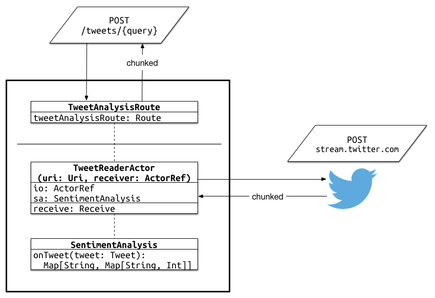

Reactive APIs
Spray, Akka & Scala
Jan Macháček @honzam399
Easy!
def api(request: HttpRequest): HttpResponse = {
???
}
For every complex problem there is an answer that is clear, simple, and wrong.
Spray's approach
A service is an Actor implementation that handles the incoming HttpRequests,
and replies with appropriate HttpResponses.
def receive = {
case request: HttpRequest =>
val response = HttpResponse(...)
sender ! response
}
The real deal
class HelloWorldService extends Actor {
def receive: Receive = {
case request: HttpRequest =>
val response = HttpResponse(...)
sender ! response
}
}
Testing the services
Because the service is a plain Actor, one can test it using TestKit.
class HelloWorldServiceSpec
extends TestKit(ActorSystem())
with SpecificationLike with ImplicitSender {
val service = TestActorRef[HelloWorldService]
"Any request" should {
"Reply with Hello, world" in {
service ! HttpRequest()
expectMsgType[HttpResponse].entity
mustEqual HttpEntity("Hello, world")
}
}
}
Hosting the services
Use spray-can HTTP server. We bind the services to it.
object HelloWorld extends App {
val system = ActorSystem()
val service =
system.actorOf(Props[HelloWorldService])
IO(Http)(system) ! Http.Bind(
service, "0.0.0.0", port = 8080)
Console.readLine()
system.shutdown()
}
class HelloWorldService extends Actor { ... }
Let's see now...
[INFO] (...) Bound to /0.0.0.0:8080
[WARN] (...) Configured registration timeout of 1
second expired, stopping

The real deal
class HelloWorldService extends Actor {
def receive: Receive = {
case request: HttpRequest =>
val response = HttpResponse(...)
sender ! response
case _: Http.Connected =>
sender ! Http.Register(self)
}
}
Demo
Convenient DSL
- It is tedious to build a complex API by handling the
HttpRequests. - Construct Spray
Routes using convenient DSL, and then turn these routes to theReceivepartial function. - Use similar DSL to unit-test the routes
Routed Hello, world
First, the Route itself:
trait DemoRoute extends Directives {
val demoRoute: Route =
get {
complete {
"Hello, world"
}
}
}
Routed Hello, world
Next up, expressing the Receive PF using the route:
class MainService(route: Route)
extends HttpServiceActor {
def receive: Receive = runRoute(route)
}
Testing our route
Spray's DSL extends to testing, too!
class DemoRouteSpec extends Specification
with Specs2RouteTest with DemoRoute {
"Any request" should {
"Reply with Hello, World" in {
Get() ~> demoRoute ~> check {
responseAs[String] mustEqual "Hello, world"
}
}
}
}
Demo
More DSL examples
- We can match—amongst others—on:
- HTTP methods:
get,post,put, ..., - Paths; including path-variables and query parameters:
path("customer" / IntNumber),parameter('id.as[Int]) - HTTP headers:
headerValueByName("User-Agent"), - Cookies:
cookie("spray") - We combine parts of the DSL using
~
Demo
Completing
To complete a route, we must provide RequestContext => (). complete does just that, or we can do it ourselves.
trait TweetAnalysisRoute extends Directives {
val tweetAnalysisRoute: Route =
post {
path("tweets" / Segment) ???
}
}
Completing
To complete a route, we must provide RequestContext => (). complete does just that, or we can do it ourselves.
trait TweetAnalysisRoute extends Directives {
val tweetAnalysisRoute: Route =
post {
path("tweets" / Segment)(sendTweetAnalysis)
}
def sendTweetAnalysis(query: String)
(ctx: RequestContext): Unit = {
ctx.receiver ! ChunkedMessageStart(...)
}
}
A real app
We want to stream results of a Twitter search, and show:
- Counts of positive and negative tweets,
- Counts of languages,
- Counts of locations
A real app
Demo
Thank you!
- Source at github.com/eigengo/phillyete2014,
- Follow my on @honzam399,
- Look out for blog post at cakesolutions.net/teamblogs